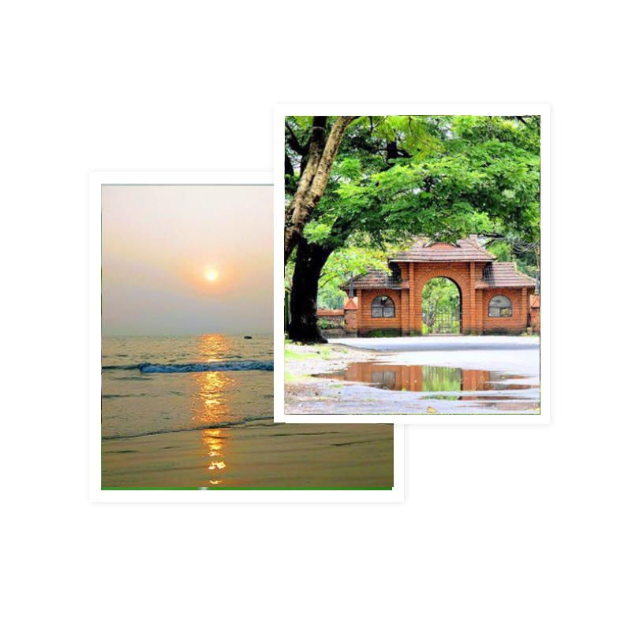

Things to do
Kozhikode Beach
This beautiful beach is visited by tourists and locals alike to watch the bewildering sunset.
Beypore Beach
Visiting a coastal city, one can expect some beautiful beaches to explore there.
SM Street
If you are in Calicut and you do not try the sweets at SM Street, then you are missing out on the sweet bliss that this coastal city has to offer.
Mananchira Square
Mananchira Square is a park which surround Mananchira, a man made freshwater pond.